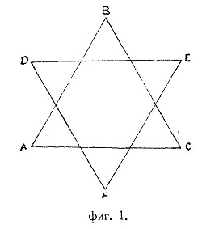

Беседа 1906 от 3877 · Беинса Дуно
Контрасти в живота
Т. м.
Защо човек трябва да живее? Защо трябва да учи? Защо трябва да яде, да се облича, да спи? Защо, най-после, трябва да умре? Това са въпроси, на които трябва да се даде някакъв отговор. Преди да си отговориш на въпроса, защо живееш, нужно е да знаеш, де си бил по-рано.
Тема за следния път: „Де е бил човек, преди да дойде на Земята“.
– Какво допринася сегашният живот на човека? Всеки човек има стремеж към нещо. Днес вие сте млади. Преди вас други са били млади, но са остарели. Един ден и вие ще остареете. Какво допринася младостта и старостта на човека? Като млади, много неща не знаете, но имате условия да живеете. Какво направихте досега? Много грешки и глупости. Старите много знаят, но въпреки това, умират. Както младият не може да се справи с живота, така и старият не може да се справи със смъртта. Младият е невежа в живота, а старият – невежа в смъртта. И двамата жънат последствията на своето невежество.

Страданието може да се уподоби на първите тонове, които издава цигулката на детето. В първо време, тоновете са нечисти, неправилни. Много време трябва да свири детето, докато започне да изкарва чисти, верни тонове от цигулката си. Чрез страданието човек минава от неверните неща към верните. – Трябва да се мъчим. – Ако мъчението може да те извади от лошите условия, то има смисъл. – Що е доброто? – Път към живота. Ако доброто не те доведе към живота, то няма смисъл. Вън от живота, доброто няма смисъл. Значи, доброто ни приближава към живота, а злото ни отдалечава от живота. Доброто води към живота, а злото – към смъртта. За да живееш, ще прилагаш доброто. И като живее добре, човек пак умира. – Де отива той? – На онзи свят. Ако е отишъл на онзи свят, добре ще бъде за него, но ако е попаднал някъде в пръстта и са го затъпкали? Ако пръстенът ти със скъпоценния камък се затъпче в пръстта, ти имаш право да съжаляваш. Обаче, ако го намери един благороден човек и го тури на ръката си, ти можеш само да се радваш. Докато е на човешката ръка, скъпоценният камък придобива нещо хубаво. Щом падне от ръката, той постепенно губи силата си. Вън от живота, нещата губят цената си. Те нямат условия да растат и да се развиват. Има нещо, което радва човека. Това е мисълта, че един ден той ще се освободи от оковите на смъртта и ще влезе в живота на безсмъртието. Днес човек се радва на преходни неща. Той живее и не мисли за смъртта, не му се вярва, че ще умре. И наистина, няма защо да вярва. И без да вярва, той умира. И като вярва умира, и като не вярва, умира. И като вярва, живее, и като не вярва, живее. Вярваш, че някой говори истината. Доколко говори истината, това е въпрос.
Да се върнем към числата – 6 и +6. Който ги разбира, знае качествата им. Може ли числото – 6 да изпълни задълженията, които му се дават? Може ли числото +6 да изпълни своите задължения? – Имат възможност да ги изпълнят. Това е един философски въпрос, от който малцина се интересуват. Колко души се интересуват от книгите на известен философ? Този философ пише по разни въпроси, но все едно, че пише за натоварените коне. Той ги съветва да работят, а те са натоварени. Той им разправя за света, за небето, за слънцето, за културата, за хората, за къщите, за университетите, за великите задачи и пр. Пита ги: Разбрахте ли? Какво могат да кажат конете? – Какво ни интересуват тези работи? Какво ни интересува – 6 и +6? Болният се оплаква на лекаря от страданията си и очаква от него да го избави от смъртта. Лекарят си казва: Аз те лекувам, но един ден смъртта ще те задигне, пък и мене ще задигне. И болният вярва, че няма да умре. И наистина, той не умира този ден, но на втория ден се случва, че той умира. Лекарят се чуди, защо е умрял. Прави му аутопсия и намира, че болният е умрял от разрив на сърцето. От какво е умрял, не е важно. Умрял е човекът. Колкото и да говориш за смъртта му, никого няма да утешиш. Та и философите, много говорят, но важно е, какво трябва да се прави. Като говориш много на турчина, той пита: Какво му е чеврето? Тайната на нещата е в – 6 и +6. Аз лесно мога да съживя минуса. – Как? – Ще го оженя. Като го оженя, мъртвият възкръсва. Ще сложа една напречна линия на минуса и той става плюс. Мъртвият излиза вън от гроба. Минусът показва не само смърт, но и страдания. Имате едно житно зрънце. Ако го хвърлите на пътя, очаква го смърт. Ще го намери някоя птица или мравка и ще го изяде. Но ако го посеете в земята, очаква го първо, страдание, а после, изникване. В този смисъл, страданието е пръстта, която засипва зрънцето, за да го освободи от явна смърт. Значи, страданията освобождават човека от смъртта. Ако не е така, страданията нямат смисъл. Значи, страданието има смисъл дотолкова, доколкото подтикват човека към живот.
Сега ние разглеждаме числата – 6 и +6, като самостоятелни единици. Аз питам, отде са дошли тези числа. Така питат всеки пътник, който отива на хотел. Той казва, че иде от еди-коя си държава, град или село. И учителят пита детето, отде иде. Детето отговаря на въпроса. И вас питат, отде сте дошли. Преди да сте дошли на земята и вие сте били някъде. Искате да кажете, че сте дошли от слънцето, но ви е страх, да не ви се смеят. Вие играете роля, както едно време истината е била принудена да играе роля. Понеже хората не я обичали, тя се криела зад вратата. Като измъчвали някого, той се питал: Няма ли истина, няма ли правда в този свят? Истината се обаждала: Тук съм, зад вратата. Има истина, има и правда в света. Казвам: Истината и правдата не са в състояние сами да оправят света. Ако можеха, досега те щяха да го оправят. Правдата и истината са в състояние да оправят света дотолкова, доколкото те се прилагат в човешкия живот. Вън от него, те нищо не могат да направят. То е все едно, да туриш кибритена клечка в дървата, без да я запалиш. Ако я запалиш, тя ще произведе известен резултат.
Животът представя съвкупност от задачи. Всяка задача е една кибритена клечка. От изгряването на слънцето до залеза – целия ден ще палиш кибритените клечки. Ако се палят лесно, ти ще бъдеш щастлив; ако се палят мъчно, или никак, ти ще бъдеш нещастен. Има дни в живота, когато се пали само една клечка. Същата клечка не може да се използва за другия ден. Какъв ще бъде животът ти за другия ден, не се знае. Днес времето е хубаво. Ти си облечен с тънки дрехи. На другия ден времето може да се развали. Какво ще правиш тогава с тези тънки дрехи? Ще бъдеш ли този ден разположен? Понеже вън е студено, ти ще се свиваш, ще търсиш къща да се приютиш. Ще искаш да ти услужат с топли чорапи, със здрави обувки. Най-после, ще седнеш да ядеш.
Всички хора се стремят да постигнат нещо. Има правила, дадени от природата, за постигане на резултати. Например, някой иска да стане музикант, друг – художник, трети – инженер и др. Много изкуства и занаяти е предвидила природата. За всяко от тях тя е предвидила специален център. На човека не остава нищо друго, освен да работи за развитие на своите центрове. Искаш да развиеш един от тези центрове, а не работиш – природата ще те интернира на общо основание. Живата, разумна природа не търпи мързеливи, празни хора. Питате: Защо греши човек? – От непослушание. То води към лъжа, кражба и други отрицателни прояви. Майката отива по работа и казва на детето си: Няма да буташ гърнето със сладкото! Тя разчита на него, нарича го ангелче. Като остане само, детето поглежда към гърнето. Нещо го тегли да си вземе една лъжичка сладко, но като си спомни, че майка му е забранила да пипа сладкото, то се отказва да си хапне от него. После пак се приближава и си казва: Ще си взема само една лъжичка. Никой няма да забележи, че е взимано. Но то се увлича – след първата, взима втора, трета лъжичка и презполовява сладкото. Като се върне от работа, майката проверява гърнето и вижда, че детето е яло сладко. Тя го пита: Яде ли от сладкото? – Не съм. Ето първата лъжа, резултат на непослушанието. Майката е недоволна от детето. Тя взима пръчката, набива го добре и го изпъжда навън. Като се намери вън от рая на майката, детето признава грешката си. Ето един пример от драмата на човешкия живот. Така постъпва и природата. За всяка погрешка тя изпъжда човека вън от рая. Природата, т.е. Божественото начало в човека, го наказва за всяка негова погрешка. Щом сгреши, тя му казва: Излъга ме! Защо детето да не каже истината още в началото? Защо не иска прошка от майка си и не каже, че е пипало сладкото? Защо я излъга? И досега още никой не е отговорил на тези въпроси. Два начина има за изправяне на човека: Законът и любовта.
Когато детето лъже, първо майката прилага закона. Взима пръчка и налага детето. Отношенията между майката и детето временно се изменят. Тя пак го обича, но знае, че нейното ангелче не говори истината. Желанието на детето да си хапне сладко е по-силно от послушанието. В случая, то обича повече сладко, отколкото майка си. Значи, грехът и страданието се раждат между полюсите на любовта. Човек се бори между любовта към Бога и любовта към света. Гърнето представлява света, който изкушава човека. Казваш: Нямам ли право да вкуся от сладкото? – Нямаш право, щом ти е забранено това. Има неща, от които можеш да вкусиш; има неща, от които не можеш да вкусиш. Всяко нещо е на своето време. Защо ще ядеш стипчив, недозрял плод? Почакай два – три месеца, докато узрее той. Вторият начин за изправяне на човека е любовта. Ако любовта на майката е силна, тя може да изправи детето си без никаква пръчка.
Казвате: Културата и науката ще просветят хората. Как ще стане това? Ако съвременната наука ни учи само да градим къщите си, какво ще придобием от това? Къщите ни запазват от суровите условия на природата. Науката ще ни научи, как да си приготвяме облекло, обувки, да запазваме храните си, но това е външната страна на живота. Има още нещо, необходимо за човека. Едно магаре, натоварено със сол, минавало през една река. Случайно то се подхлъзнало и паднало във водата. Като станало, усетило, че товарът му олекнал. Друг път, натоварено с вълна, то минавало пак през реката. За да се облекчи, то съзнателно се потопило във водата, но било излъгано: товарът му толкова натегнал, че то не могло да излезе от водата. Онова знание, което ни облекчава, е на мястото си, когато носим сол. Обаче, същото знание не може да ни помогне, когато сме натоварени с вълна. Ако прилагате първия метод на магарето, при лошите аспекти на живота, вие ще имате резултат минус. Ако слънцето е във възходящ или низходящ знак, какво влияние ще окаже върху човека? То е все едно, да посеете едно семе през пролетта, или в ранната есен. В двата случая ще имате два различни резултата. Ако върху някой човек има влияние Сатурн и Луната, какъв ще бъде неговият характер при лошите аспекти на тези планети? – Той ще бъде мрачен, ще има силно въображение, но ще преувеличава нещата и от страх ще умре. Сатурн ще му създаде хилаво тяло, а Луната – болно въображение. Луната има желание да му помогне, да го подтикне към работа, към дейност, но слабото тяло не му позволява това. Той предпочита да умре, отколкото да се бори с лошите условия на живота. – Коя планета може да му помогне при тези условия? – Слънцето и Венера, която не отива никъде без Слънцето. Тя пали свещта си от него. Със запалена свещ добре се пътува. Понякога Венера обича да се шегува. Със свещта си тя запалва и плевнята на човека.
Ново съзнание е нужно на човека. Без това съзнание той не може да се повдигне. Старото съзнание е стара дреха. Старото съзнание наричаме атавистични навици. Новото съзнание изключва всички условия, които спъват човека. То изключва всички болезнени състояния. Новото съзнание прави организма здрав. Птицата по-лесно може да избегне лошите условия, отколкото млекопитаещите. Тя ще хвръкне и ще отиде при по-добри условия. Разумният човек, който разбира законите на природата, като птицата, лесно се справя с лошите условия. Ето куче минава покрай един кон, с вериги на краката и го пита: Защо са тези окови на краката ти? – Господарят ми не иска да скитам из гората. – Защо не направи краката си по-тънки, да могат лесно да се изхлузват от веригите? – Те ми са наследство от дядо ми и прадядо ми. Кучето продължило пътя си и срещнало един вол с юлар на главата си. То го запитало: Защо носиш този юлар? – За да ме впряга господарят на работа. – Защо носиш рога? – За да се браня. – Ако нямаше рога, лесно щеше да се изхлузваш от юлара. Един ден конят поумнял и се освободил от веригите. Той видял кучето, вързано със синджир. Конят му казал: Благодаря ти, че ми посочи, как да се освободя от нещастието. Но какво е станало с тебе? Какъв е този синджир на врата ти? – Там е злото. Господарят намери, как да ме ограничи; трябваше да направя главата си по-тънка, за да се измъквам от синджира. Казвам: Веригите, юларът, синджирът – това са символи.
Според някои източни и западни окултисти, науката води човека до една опасна област. Преди всичко, трябва да се изучават качествата на елементите, които животът включва в себе си. Също така трябва да се изучават условията, при които тези елементи действат. Живата и мъртвата материя, както мислите, чувствата и постъпките имат своя положителна и отрицателна страна. Всичко това трябва да се знае. Не можеш да работиш с известни елементи, ако предварително не знаеш техните свойства. Всяко свойство, приложено на място, има резултат.
Една млада, красива мома се отегчила от живота, дотегнала й селската работа. Един ден, като работела на нивата, седнала да си почине и се замислила. Минал един богат човек и я запитал: Защо си толкова замислена? – Дотегна ми животът. – Започни да пееш и да играеш. Хайде, попей ми и ми поиграй! Той я възнаградил щедро. Съседът й, стар, беден човек, я запитал: Какво стана с тебе, дъще, че толкова се развесели? – Реших да пея и играя, да подсладя живота си. – Тогава да поиграя и аз. Започнал той да играе, но не върви: краката се преплитат. Когато момата играе и пее, то е на място. Друго се иска от стария.
Методите на стария и на младия са диаметрално противоположни. С кой от двата метода ще си послужиш, това зависи от твоята разумност. Умният употребява всяко нещо на своето място. Здравословно, добро нещо е да пееш и играеш, но работа се иска и на полето и в къщи. Някога е по-добре да играеш и пееш, отколкото да се потиш в кухнята. Така е за момата, но не и за стария. Какво трябва да прави той? Как ще превърне той своето недоволство в доволство? Следният път ще отговорите, какво трябва да прави старият, за да му тръгнат работите.
– Само светлият път на мъдростта води към истината.
– В истината е скрит животът.
8. Лекция от Учителя, държана на 11 ноември, 1932 г.
София – Изгрев.